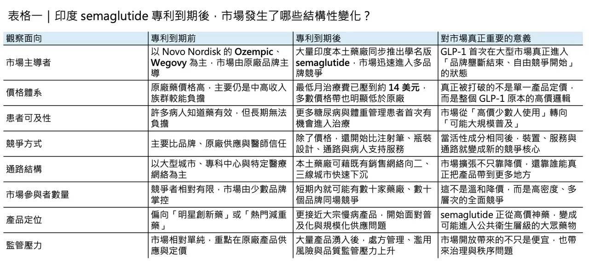
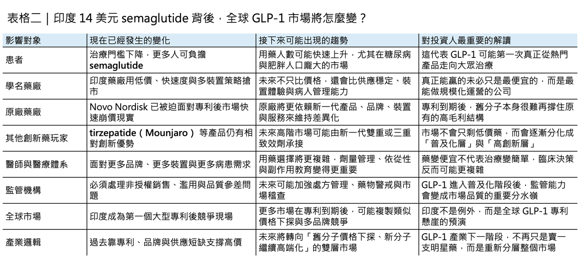

當 semaglutide （瘦瘦針）在印度跌到每月 14 美元，真正被顛覆的不是減重藥價格，而是整個 GLP-1 市場的商業邏輯
2026 年 3 月，semaglutide （瘦瘦針）在印度迎來一個足以寫進產業教科書的時刻。隨著 Novo Nordisk 在印度的核心專利到期，這個過去幾年幾乎重新定義全球減重與代謝治療想像的分子，第一次在一個具備龐大人口基數、成熟學名藥工業與高度自費特性的超大型市場，正式進入白熱化的專利後競爭。
分享這篇分析
把這篇文章轉給關注生技醫藥、公司研究或資本市場的朋友。
這不是單純多了幾個便宜版 Ozempic 或 Wegovy，而是整個 GLP-1 產業第一次被迫面對一個真正尖銳的問題：當明星分子失去專利保護後，它究竟會繼續維持「高價神藥」地位，還是迅速被打回大宗慢病產品的本質？
價格崩塌，不只是便宜，而是價格體系被整個改寫

印度給出的答案，比市場原本預期得更激烈。就在專利到期後幾天內，多家印度藥廠同步推出學名版 semaglutide，首波產品已把治療成本壓低約 70%；不同品牌、不同劑量與不同裝置形式的月治療費，大致落在 ₹750 到 ₹4,200 之間。
更具象徵意義的是，市場最低入門版本甚至已經壓到每月 ₹1,290，約 14 美元。和 Novo Nordisk 在 2025 年 11 月主動下修後、仍落在每月 ₹10,850 至 ₹16,400（約140美元） 的 Wegovy 價格相比，這已經不是折扣，而是價格體系本身被直接改寫。
這個斷裂之所以重要，不只是因為數字很好看，而是因為它第一次讓大家看見：GLP-1 藥物過去幾年被包裹在專利、品牌、供應短缺與需求爆發之中的高價敘事，其實在特定市場條件下，可以比想像中更快鬆動。
印度並不是一個普通的單點市場，而是一個自費比重高、醫療價格極度敏感、且本土藥廠能夠在專利到期後迅速放量的市場。超過 40 家印度藥廠將在短期內推出超過 50 個 semaglutide 品牌，這代表競爭從一開始就不是「有沒有替代品」，而是直接進入「誰能最快搶到最大規模」的紅海。
對所有還把 GLP-1 想成少數富裕族群專屬療法的人來說，印度等於當場示範了一次完全不同的市場劇本。
真正的戰爭，不只是價格，而是整套產品系統

但如果把這件事只理解成價格戰，其實還是太淺了。印度這一波真正值得細看的，是競爭結構的層次比外界想得複雜得多。
🔹 Sun Pharma、Dr. Reddy’s、Zydus、Torrent、Glenmark 等公司推出的，並不是完全同質的商品。
🔹 有些用可重複使用的筆型注射器，有些用拋棄式筆，有些採小瓶裝，有些甚至同時押注口服與注射版本。

當活性成分一樣時，差異化就從分子本身，轉移到裝置、冷鏈、使用體驗、醫師信任與通路覆蓋。也因此，市場最後未必會由最低價產品通吃，而更可能是由那些能把「藥、裝置、供應與服務」一起打包的公司勝出。Zydus 與 Lupin 在專利到期前就先簽下共同推廣與供貨協議，正是這種體系化競爭開始成形的訊號。
這也說明了，為什麼每月 14 美元雖然是最吸睛的標題，卻不會是這場戰爭真正的終點。
Semaglutide 用在第二型糖尿病與體重管理時，本來就不是一次性消費，而是高度依賴長期依從性、劑量漸進調整與副作用管理的慢性治療。決定市場勝負的關鍵不只在價格，而在醫師對品牌的信任，以及產品是否能穩定提供裝置品質與冷鏈條件。
更進一步看，部分印度藥廠已經不是只想賣學名藥，而是想把 semaglutide 做成「藥物加服務」的長期經營生態。換句話說，印度市場真正被打開的，不只是價格天花板，也是病人管理商業模式的想像空間。
價格放開之後，灰色需求與監管壓力也一起湧上來
當然，這種爆量開放也立刻帶來另一面。專利一到期，價格迅速下探，需求被大量釋放，最先浮上檯面的不只會是新病人，還會是灰色購買、非適應症濫用與美容化使用。
這並不是抽象風險。3 月 24 日，印度主管機關 CDSCO 已針對未經授權的減重藥銷售與宣傳加強稽查，並對 49 家批發商、零售商與瘦身診所等實體展開檢查，同時發出違規通知。主管機關也明確點出，這類藥物若在缺乏醫療監督下使用，可能導致嚴重不良反應與健康風險。
這意味著，GLP-1 進入專利後時代後，市場要面對的第一場新戰役，已經不再只是專利攻防，而是醫療治理與處方秩序能不能跟上價格崩跌之後的需求洪流。
印度不是局部事件，而是全球 GLP-1 專利懸崖的第一場壓力測試
從國際角度看，印度這一幕之所以關鍵，正在於它不是局部事件，而更像是全球 GLP-1 專利懸崖的第一個大型壓力測試。
印度藥廠不只盯著本土市場，也已把加拿大、巴西、拉丁美洲、土耳其等海外市場列入後續布局。這代表印度現在發生的，並不只是本地學名藥廠分食 Novo Nordisk，而是整個全球供應鏈開始演練一個新時代：
當 semaglutide 在更多市場逐步失去專利保護之後，競爭重心會從「誰有分子」轉向：
✨ 誰有產能
✨ 誰有裝置
✨ 誰有通路
✨ 誰有品牌信任
✨ 誰有病人支持能力
對創新藥廠而言，這也是非常殘酷的提醒——專利到期之後，想守住市占，靠的將不再是舊分子本身，而是下一代產品、品牌護城河與整體服務系統。
Novo 與 Lilly 早就聞到風向，但專利到期的洪流很難真正擋下
Novo Nordisk 其實早就嗅到這個風向。早在 2025 年 11 月，公司就已在印度把 Wegovy 價格下調最高達 37%，顯然是在為專利到期前的防守預做準備；另一邊，Eli Lilly 的 Mounjaro（tirzepatide） 也早已搶先在印度打出存在感，甚至曾在當地成為銷售額最高的藥品。這說明創新藥廠並不是不知道專利懸崖要來，而是即使提早降價、擴通路，也很難在一個能夠一次湧入數十家本土競爭者的市場裡，長期維持原有的定價秩序。
對 Novo 與 Lilly 而言，印度現在已經不是單純的成長市場，而是未來全球 GLP-1 市場分層化競爭的預演現場。
真正被顛覆的，不是價格，而是 GLP-1 的產業定位
所以，這場看似由 14 美元引爆的新聞，真正改寫的其實不是某個月費價格，而是整個產業對 GLP-1 的想像方式。
未來幾年，GLP-1 市場很可能會逐漸分裂成兩層：
🌿 一層是以 semaglutide 為代表、價格快速下移、以慢病普及與大規模可近性為目標的「大眾化層」。
🌿 另一層則是由創新藥廠主導、圍繞新劑型、新裝置、口服版本、雙重或三重致效劑，以及更完整病人管理服務的「高階創新層」。
印度現在發生的，不是 GLP-1 神話的結束，而是它從高價神藥走向公共衛生基礎設施的起點。
真正值得記住的，從來都不只是 semaglutide 在印度跌到每月 14 美元，而是這個價格第一次讓全世界看見：
當專利失守，GLP-1 可以從少數人的熱門產品，瞬間變成多數人的慢病商品。
參考資料：
0.各公司官網＆公開資料
1.Salve,P.et al.India is launching cheap,weight-loss drugs and Novo Nordisk is betting on its brands to stay on top.CNBC.23.03.2026.
2.Sanjay,S.Ozempic Copies at$14 in India as Novo Patent Expires.Bloomberg.20.03.2026.
3.Generic Ozempic to cost Rs 1,290 in India:A game changer in the fight against obesity?Firstpost.20.03.2026.
4.Novo Nordisk patent expiry opens door to cheaper weight-loss drugs in India.CNBC.19.03.2026.
5.Dunleavy,K.With Novo's semaglutide going off patent,Indian drugmakers set to launch their cheaper generics.FiercePharma.20.03.2026.
6.Novo to track generic surge as semaglutide goes off patent.India Times.21.03.2026.
引用本文
若在簡報、報告或社群討論引用，建議附上 Drugnews 原文連結。
Drugnews 編輯部，〈骨折價 瘦瘦針來了，每月420塊台幣〉，Drugnews｜藥時事，2026/04/06，https://drugnews.com.tw/articles/2026-04-06-420.html
社群原文
讀完這篇，下一步看
這三篇會優先依主題、標籤與產業脈絡推薦，幫你把同一個問題讀得更完整。

一篇文章講通現在的“禮來”併購邏輯
💡 四個月，五筆交易，若把交易上限全部加總，Eli Lilly 在 2026 年前四個月已經丟出超過 187 億美元的併購火力：1 月的 Ventyx Biosciences、2 月的 Orna Therapeutics、3 月的 Centessa Pharmaceuticals、4 月的 Cro…

灰色產業上牌桌
🌪️ 在一處私人莊園裡，矽谷創業者、生技極客與華爾街資金坐在同一張桌上，話題從 AI、加密貨幣一路滑向更隱密的領域：BPC-157、MOTS-c、TB-500、Semax、Epitalon。這些名字不像藥，更像暗號。

瘦瘦針、猛健樂之後，減肥藥研發正在發生什麼事？
過去幾年，**司美格魯肽（semaglutide）與替爾泊肽（tirzepatide）**幾乎重寫了肥胖治療的市場想像。它們不只把減重從「意志力問題」拉回醫療管理，更把投資人、藥廠與臨床醫師對減重藥的預期，直接拉高到一個全新標準。